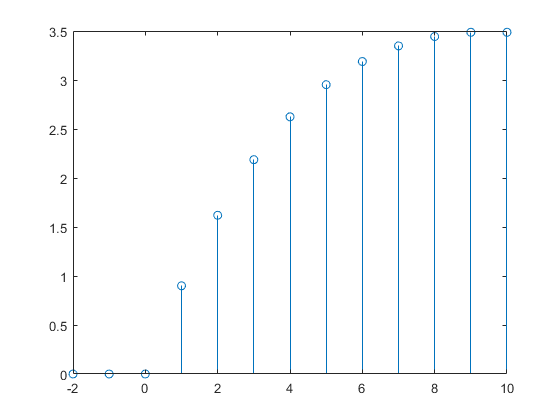
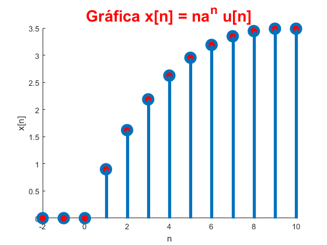
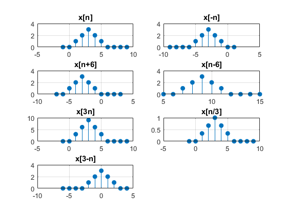

Práctica 3: Señales en tiempo discreto
Contents
Integrantes
- Alonso Valdez Oren Jesús
- Hernández García Eduardo
- Luna Reyes Rodrigo
Objetivos
- Manipulación básica de MATLAB
- Gráficas de señales reales y complejas discretas
- Transformación de señales discretas (escalamientos y traslaciones)
- Calculo de energía y potencia de señales discretas
Desarrollo
function [f] = fun1(W,a)
f =@(n) a.^n.*cos(W.*n)+1j.*a.^n.*sin(W.*n).*(n>=0)
end
n = -2:10;
a = 0.9;
f = @(n) (n.*a.^n).*(n>0);
fun2();
 
function [E] = energiadis(t,A)
if nargin<2
error('Faltan parametros');
end
y=dot(t.^2,A.^2);
E=y;
stem(t,A,'filled');
axis([-10 10 -10 10]);
xlabel('t');
ylabel('A(t)');
title('Grafica-Energiadis- Prob 3.1.1 C');
hold on
grid on
end
figure
subplot(4,2,1);
t=[-1 0 1 2 3 4 5 6 7 8 9];
A=[0 0 1 2 3 2 1 0 0 0 0];
axis([-10 10 -6 6]);
xlabel('t');
ylabel('A(t)');
stem(t,A,'filled'),title('x[n]');
hold on
grid on
subplot(4,2,2);
t=[-9 -8 -7 -6 -5 -4 -3 -2 -1 0 1];
A=[0 0 0 0 1 2 3 2 1 0 0];
axis([-10 10 -6 6]);
xlabel('t');
ylabel('A(t)');
stem(t,A,'filled'),title('x[-n]');
hold on
grid on
subplot(4,2,3);
t=[-7 -6 -5 -4 -3 -2 -1 0 1 2 3];
A=[0 0 1 2 3 2 1 0 0 0 0];
axis([-10 10 -6 6]);
xlabel('t');
ylabel('A(t)');
stem(t,A,'filled'),title('x[n+6]');
hold on
grid on
subplot(4,2,4);
t=[5 6 7 8 9 10 11 12 13 14 15];
A=[0 0 1 2 3 2 1 0 0 0 0];
axis([-10 10 -6 6]);
xlabel('t');
ylabel('A(t)');
stem(t,A,'filled'),title('x[n-6]');
hold on
grid on
subplot(4,2,5);
t=[-1 0 1 2 3 4 5 6 7 8 9];
A=[0 0 3 6 9 6 3 0 0 0 0];
axis([-10 10 -6 6]);
xlabel('t');
ylabel('A(t)');
stem(t,A,'filled'),title('x[3n]');
hold on
grid on
subplot(4,2,6);
t=[-1 0 1 2 3 4 5 6 7 8 9];
A=[0 0 1/3 2/3 1 2/3 1/3 0 0 0 0];
axis([-10 10 -6 6]);
xlabel('t');
ylabel('A(t)');
stem(t,A,'filled'),title('x[n/3]');
hold on
grid on
subplot(4,2,7);
t=[4 3 2 1 0 -1 -2 -3 -4 -5 -6];
A=[0 0 1 2 3 2 1 0 0 0 0];
axis([-10 10 -6 6]);
xlabel('t');
ylabel('A(t)');
stem(t,A,'filled'),title('x[3-n]');
hold on
grid on
